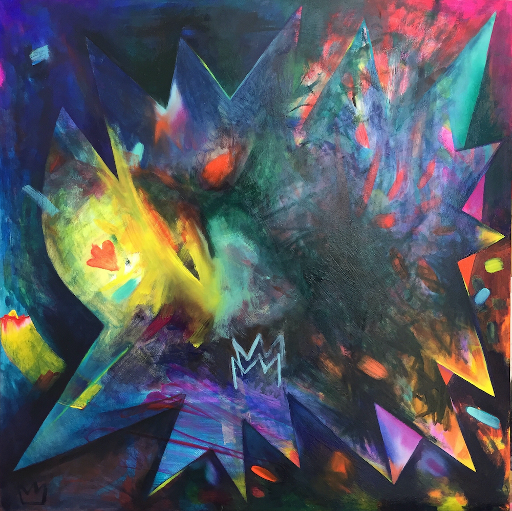
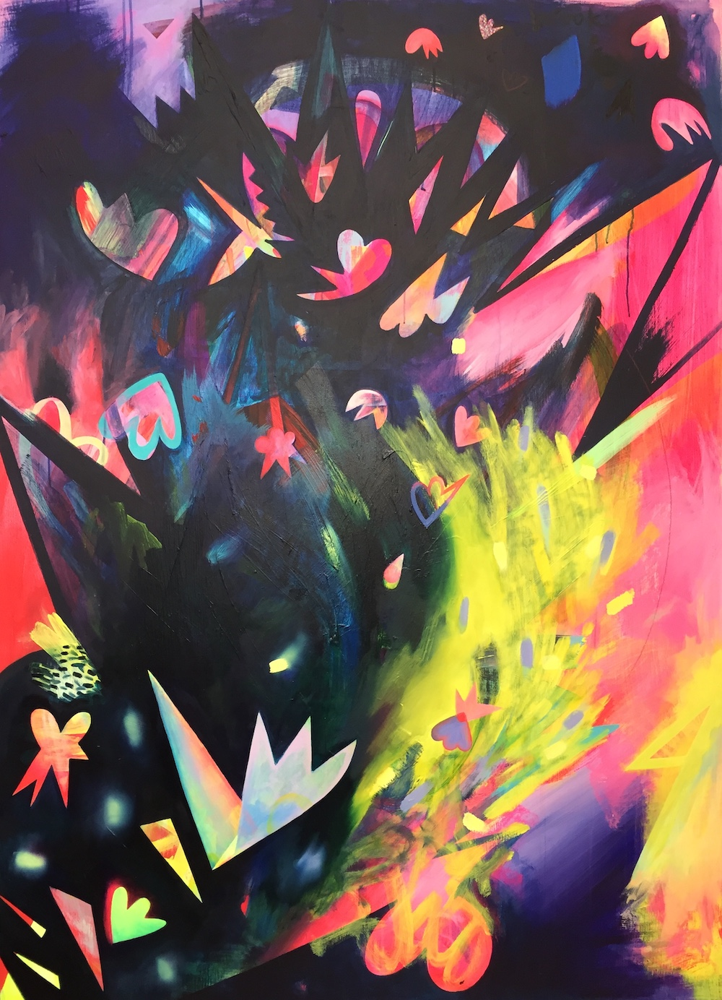
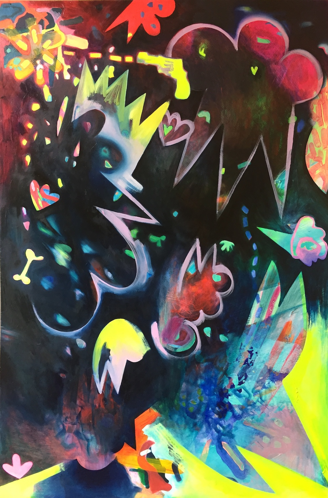
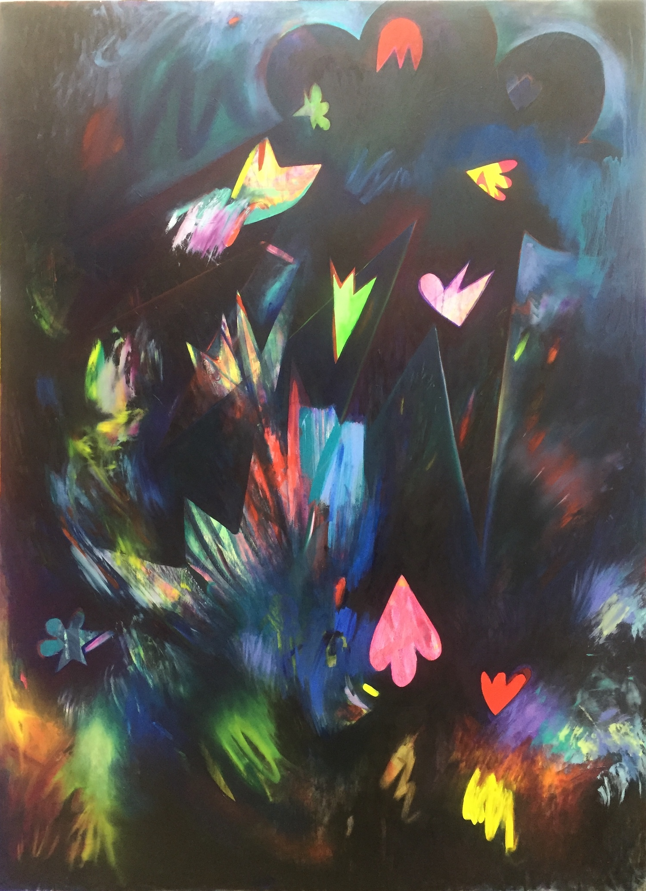
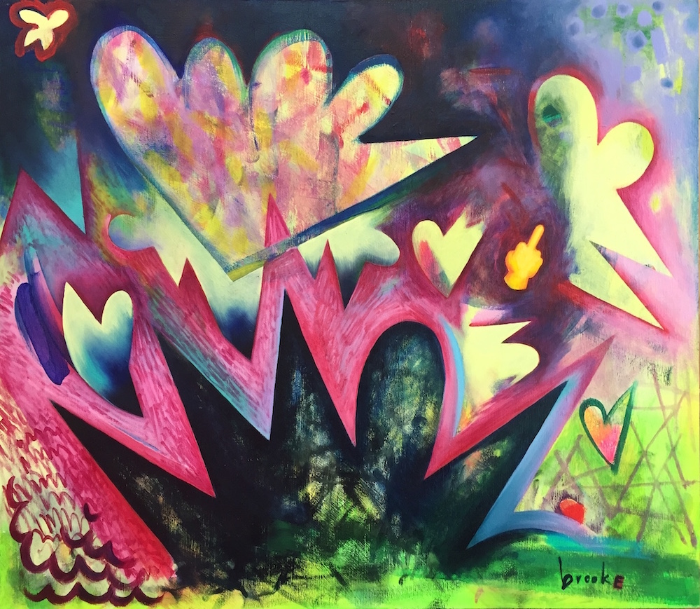
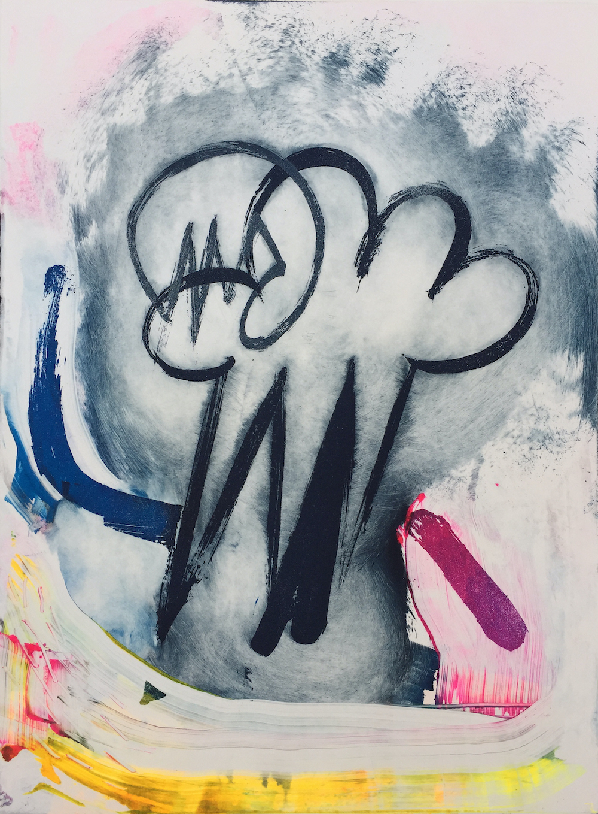
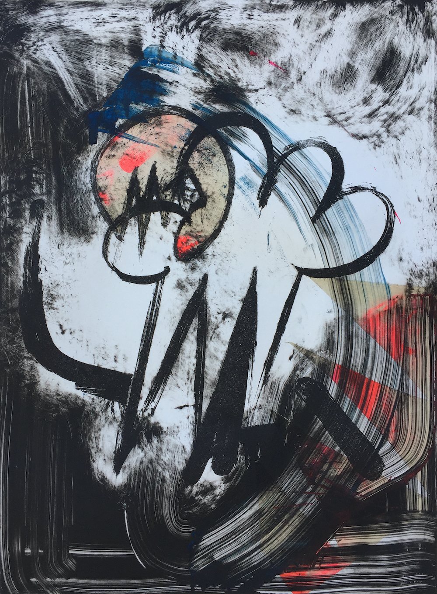

“We all have an energy inside of us and it ́s cathartic to see someone successfully getting it out.”
Layers of paint varying from translucent to opaque are applied in a spontaneous flow. Bold brushstrokes intertwine with delicate markmaking until the layers interlock and create space. Abstract shapes and emojis swirl around the paintground and resemble a sense of speed and movement into different directions - they are following their own gravity. The painted surface becomes a universe.

queen (2020) oil on wood panel 50 * 50 cm

not a virgin (2020) oil and acrylic on wood panel 150 * 110 cm

how to end a relationship (2020) oil and acrylic on wood panel 114 * 76 cm

brookalactic (2020) oil on wood panel 126 * 92 cm

my world my rules (2020) oil on wood panel 53 * 61 cm

royal brooke (2017) acrylic on canvas 205 * 390 cm

brooke (2016) acrylic on wood panel 122,5 * 93,5 cm

unicorn universe (2016) acrylic on wood panel 85 * 122,5 cm

variation: shapes that look like hearts falling in love with stars (2016) sugarlift etching and monotype print 65 * 45 cm

variation: shapes that look like hearts falling in love with stars (2016) sugarlift etching and monotype print 65 * 45 cm
Nora Roggausch * 1988
lives and works in Berlin 2020 // BA Arts & Media, Carl von Ossietzky University Oldenburg GE 2016 // Painting, Global Art Scenes & Printmaking, California State University Long Beach USA as Arnold Heidsieck-scholar ZEIT Stiftung Ebelin Gerd Bucerius and American Friends of Bucerius 2012 // BFA Academy of Fine Arts Maastricht NL 2013 // Printmaking, Kunsthochschule Berlin Weißensee 2011 // Painting, Faculdade de Belas Artes de Lisboa PT
2020 // live painting at Mendehlssohn-Remise Berlin (collaboration with Viktoria Elisabeth Kaunzner, violinist & composer)
2019 // live painting Zionskirche Berlin (collaboration with Viktoria Elisabeth Kaunzner)
2017 // Superheroes live in the Unicorn Universe Museum Ratingen (solo show)
2016 // There ́s more to the picture Universität Oldenburg (group show)
2016 // Ink 17: Turf Marilyn Werby Gallery, Long Beach, USA (group show)
2015 // Kulturcafé Poylester, Oldenburg (group show)
2015 // Die Lichtenberg Norm Galerie Zwitschermaschine, Berlin (group show)
2014 // Exhibition and auction Kunstverein Bahner e.V., Schloß Neuenburg, Neuenburg (group show)
2014 // Anonymous Drawings 2014 – Based in Berlin, Pavillion am Milchhof, Berlin (group show)
2013 // The Enchanted Wood Artwood Studio, Tønsberg, NO (group show)
2013 // Dreamworlds Schillerpalais, Berlin (group show)
2013 // Neverland HEDAH, Maastricht, NL (group show)
2013 // Macht Kunst Deutsche Bank Kunsthalle, Berlin (group show)
2013 // Nora Roggausch – Drawing and Painting Kurhaus Dangast, Dangast (solo show)
2012 // Dossier 18.103 Final Exhibition ABK Maastricht, NL (group show)
2011 // Straight from the Artist´s Studio - Sound Performance Intro in Situ, Maastricht (group show)
2019 // Experiments with the Human Heart. Poetry Kea Heinrich. Illustration Nora Roggausch. Berlin: Lametta Verlag
Impressum
noraroggausch@gmail.com
© Nora Roggausch 2017
All rights reserved.